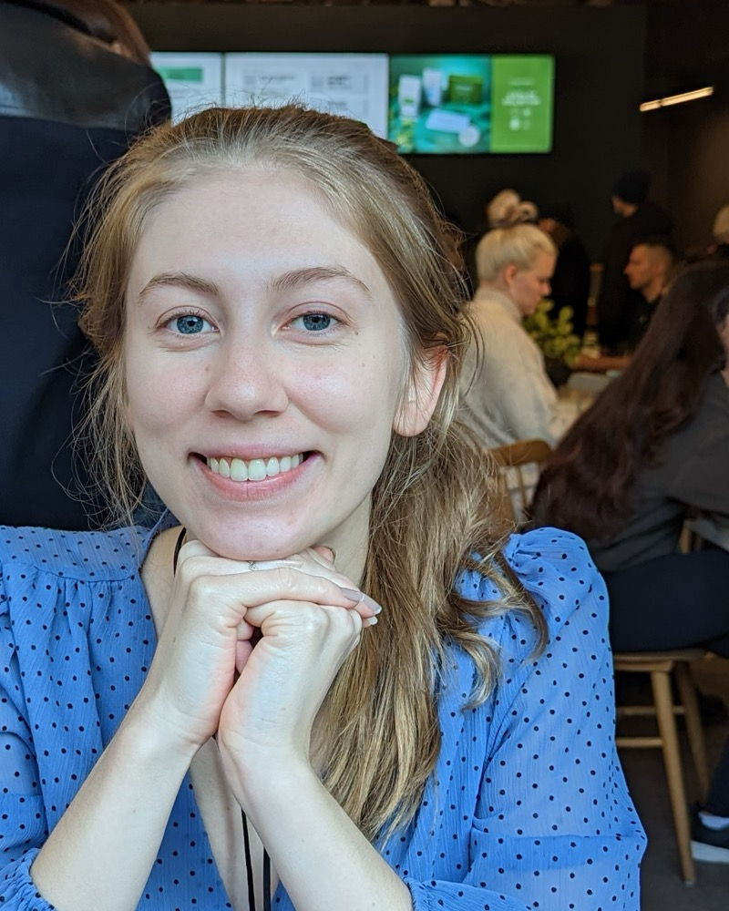

compute-engine — Summations
Merged a 600+ line contribution to cortex-js/compute-engine — the symbolic-math engine behind MathLive — extending summation & product parsing.
View case study →Software Engineer — backend, cloud & applied AI

Selected Work
Merged a 600+ line contribution to cortex-js/compute-engine — the symbolic-math engine behind MathLive — extending summation & product parsing.
View case study →Architected greenfield cloud infrastructure (Pulumi + AWS) and 20+ FastAPI endpoints for a video-claiming platform at Warner Music Group.
View case study →Undergraduate thesis fine-tuning BERT classifiers with Naive Bayes & topic modeling for sentiment, stigma, and topic classification.
View case study →Current focus: building with the Model Context Protocol and multi-agent orchestration — turning LLMs into reliable, tool-using systems.
View case study →Expertise
Production Python services that hold up under load — clean REST design, microservice integration, and the reliability work that keeps them fast.
Infrastructure as code and the pipelines around it — I set the Pulumi pattern other teams now follow at Warner Music Group.
A growing focus of my work: bringing the modern AI stack into production systems — agents that use tools, coordinate, and deliver reliably.
Experience
Warner Music Group
Promoted from Software Engineer I to II within 16 months.
Amazon (AWS)
EY (Ernst & Young)
Engineering Stores
About
I'm a software engineer with a B.Eng in Engineering Science — Machine Intelligence from the University of Toronto (Sep 2019 – Apr 2023). I work across backend services, cloud infrastructure, and data systems, with a growing focus on applied AI. I'm currently a Software Engineer II at Warner Music Group and looking to make my next move in San Francisco.
Python (FastAPI, SQLAlchemy, Pydantic, Celery), JavaScript, Java
Pulumi, AWS (RDS, ECS, Load Balancers), CI/CD (GitHub Actions), Docker, New Relic
Redis, PostgreSQL, REST API design, SQLAlchemy, Metabase
PyTorch, TensorFlow, Pandas
LLM APIs (OpenAI, Anthropic Claude), AI agents & frameworks (Claude Agent SDK), RAG